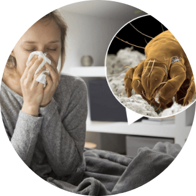
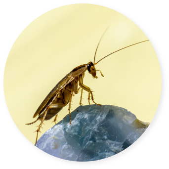

Цілорічна алергія, як випливає з назви, відрізняється від сезонної тим, що триває весь рік з періодичними
загостреннями
і незначними покращеннями. Найчастіше проявляється у вигляді алергічного риніту, бронхіальної астми.
Що призводить до розвитку цілорічної алергії?
Виникнення захворювання обумовлено впливом інгаляційних (тих, що проникають через дихальні шляхи з повітрям, яким ми
дихаємо) алергенів житла, таких як кліщі домашнього пилу, алергени домашніх тварин, тарганів, спор цвілевих грибів.
алергени домашніх тварин (кота, собаки, морської свинки, хом'яка, папуги та інших).
Кліщі домашнього пилу
Цвілеві грибки
Алергени домашніх тварин

Домашній пил складається з багатьох органічних і неорганічних компонентів, що включають волокна, спори цвілі,
продукти
життєдіяльності кліщів та інших комах, лупу і слину домашніх улюбленців. Однак, основною алергенною частиною
домашнього
пилу, як складного багатокомпонентного алергену є кліщі, які і стають найчастішою причиною цілорічної
алергії.Досить
часто виникнення захворювання обумовлено алергенами тварин: кішок, собак, коней, гризунів. Вони містяться в їх
лупи,
слині, виділеннях і є одними з найбільш сильнодіючих алергенів. За даними ВООЗ, від 2 до 30% населення різних
країн
мають підвищену чутливість до алергенів тварин.

Існують дані, які повідомляють про те, що в деяких регіонах підвищена чутливість до алергену таргана може бути
більш
поширеною, ніж до домашнього пилу, і в ряді випадків є причиною важких нападів бронхіальної астми. Основні
алергени
містяться в екскрементах і хітиновій оболонці комах.
Також, причиною цілорічної алергії можуть бути цвілеві і дріжджові грибки. Для грибків Cladosporum, Alternaria і
Stemphylium характерна сезонність проявів алергії, а для грибків Aspergillus і Penicillium вираженість симптомів
досить
постійні протягом року.
Як проявляється захворювання?
Прояви цілорічної алергії практично нічим не відрізняються від симптомів сезонної, виключаючи той факт, що
захворювання
має постійний перебіг і більш високий відсоток ускладнень в зв'язку з цим. Основні симптоми цілорічної алергії:
задуха, часто ночами і при фізичному навантаженні;
свербіж очей, сльозотеча, набрякання повік.
Однак, незважаючи на те, що алергени кліщів домашнього пилу, спор грибів і тарганів присутні цілий рік, їх
кількість в
повітрі залежить від пори року. У теплих і вологих приміщеннях кількість алергенів кліща домашнього пилу і цвілі
значно
зростає, тому прояви алергії можуть посилюватися в холодну пору року.